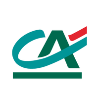
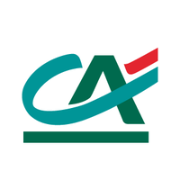
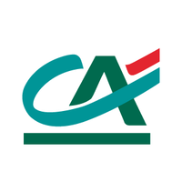
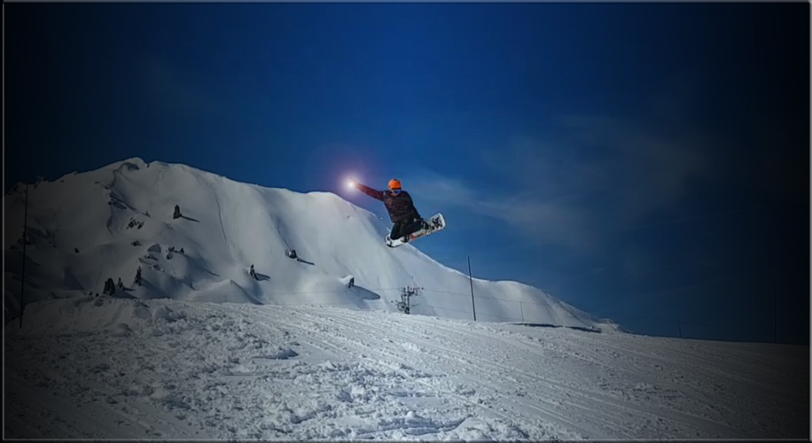

• Étudiant en troisième année à Audencia Bachelors en spécialité finance, contrôle de gestion.
• Alternant, service Assistance Clients chez Crédit Agricole Titres.
(de code)

• Étudiant en troisième année à Audencia Bachelors en spécialité finance, contrôle de gestion.
• Alternant, service Assistance Clients chez Crédit Agricole Titres.
Étudiant en école de commerce depuis maintenant 3 ans, je combine à ce jour 10 mois d'expériences professionnelles.
Cette expérience de deux mois m'a permis de manager une équipe de 10 volontaires, améliorant ainsi mon anglais.
Mon rôle était ici de répondre au mieux aux questions des clients. Mon sens du relationnel et ma capacité d'adaptation ont ainsi été mis à l'épreuve.
J'ai effectué ce stage avec l'objectif d'en apprendre plus sur le domaine bancaire tout en améliorant mon côté commercial. Il m'a été confié la prospection des cartes Gold et des livrets jeunes.
Cette alternance est dans la continuité de mon précédent stage. Après la banque, c'est de la bourse dont je voulais me rapprocher. Mon poste au sein du service assistance client me permet de tirer bénéfice de ma précédente expérience dans un domaine qui me tient à cœur.
J'ai pour objectif de travailler dans la finance de marché en tant que Trader ou Sales. Mais qu'est-ce qu'un Trader et pourquoi cela m'intéresse ?
Un trader est une personne qui travaille sur les marchés financiers. Son objectif est d'acheter un actif financier (une devise, une action, une obligation...) et de le revendre plus cher, pour dégager une plus-value. C'est un métier très prenant et stressant de part les sommes qui sont négocier par les Traders. Il faut savoir faire preuve d'analyse et toujours se renseigner afin d'anticiper les fluctuations du marché.
Ce qui m'attire dans ce métier, c'est qu'il regroupe tout ce que j'aime. L'informatique, l'économie, les mathématiques et surtout : gagner.
Dans le cadre de mon cours d'English for Finance, je suis actuellement en exercice de simulation sur le marché américain NASDAQ. Cet exercice est pour moi l'occasion d'expérimenter ce métier et me confirme dans mon choix de l'exercer dans le futur.
Très original me direz vous, j'aime la musique. Même si je ne suis pas cantonné à un style de musique, je vais vous épargner le "j'aime de tout".
Après quelques années d'errance musicale à base de Techno (David Guetta) et de Dubstep (Skrillex) c'est en 3ème que je me mets au Rap en tombant par hasard sur le clip Bonjour de VALD
D'abord étonné, ma curiosité me pousse à découvrir plus de musique de l'artiste dont Journal Perso qui me confirmera que j'aime le Rap et que VALD est définitivement mon artiste préféré.
On dit qu'une image vaut mille mots :
